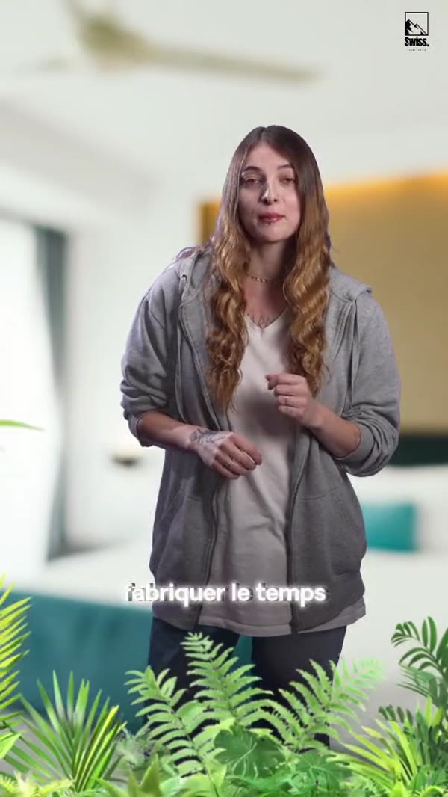
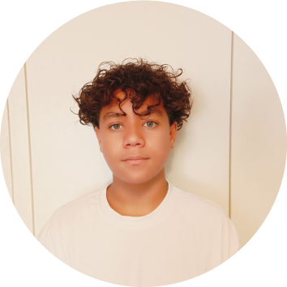

1:16Une vidéo face caméra avec décor, sous-titres animés et logo.
J'ai 15 ans et je cherche une place d'apprentissage d'Interactive Media Designer CFC dans le canton de Vaud, dès août 2027.
Passionné par le montage vidéo, le graphisme et la création de sites web.

Des montages vidéo que j'ai réalisés et le site sur lequel vous êtes.
Cliquez sur une vidéo pour la regarder

1:16Une vidéo face caméra avec décor, sous-titres animés et logo.
La recette du célèbre chocolat expliquée avec des illustrations et des textes animés.
Mon premier site, créé avec l'aide d'une intelligence artificielle et mis en ligne par moi-même. Ce projet m'a appris à :
Je viens de terminer l'école obligatoire en voie générale (VG 2) à Cossonay. Depuis quelques années, je monte mes propres vidéos : j'aime choisir la musique, couper au bon moment et ajouter des textes qui donnent du rythme.
Mes stages ont été un vrai déclic : en découvrant le métier d'Interactive Media Designer, j'ai su que c'était fait pour moi. Il réunit tout ce qui me passionne : la vidéo, le graphisme et le web. J'ai hâte de l'apprendre et de participer à de vrais projets !
En ce moment, j'apprends Figma pour créer mes premières maquettes de sites.
Je cherche une place d'apprentissage d'Interactive Media Designer CFC dès août 2027. Si besoin, je viens volontiers faire un stage dans votre entreprise pour vous montrer ma motivation.
kingston.luthi@gmail.com